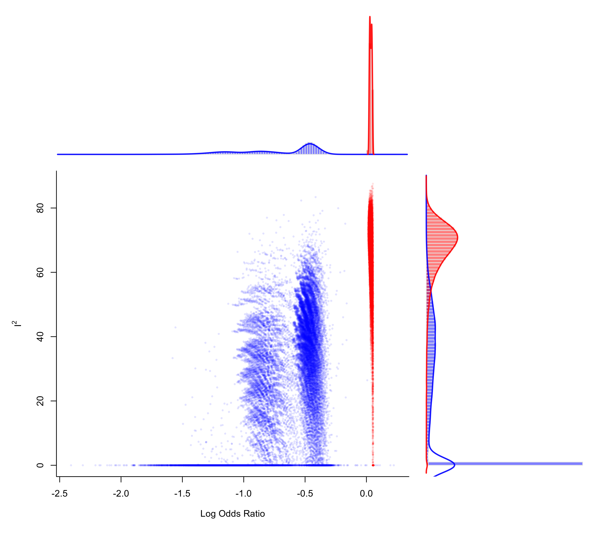

gosh.RdFunction to create GOSH plots for objects of class "rma".
gosh(x, ...)
# S3 method for rma
gosh(x, subsets, progbar=TRUE, parallel="no", ncpus=1, cl, ...)an object of class "rma".
optional integer to specify the number of subsets.
logical to specify whether a progress bar should be shown (the default is TRUE).
character string to specify whether parallel processing should be used (the default is "no"). For parallel processing, set to either "snow" or "multicore". See ‘Note’.
integer to specify the number of processes to use in the parallel processing.
optional cluster to use if parallel="snow". If unspecified, a cluster on the local machine is created for the duration of the call.
other arguments.
The model specified via x must be a model fitted with either the rma.uni, rma.mh, or rma.peto functions.
Olkin et al. (2012) proposed the GOSH (graphical display of study heterogeneity) plot, which is based on examining the results of an equal-effects model in all possible subsets of size \(1, \ldots, k\) of the \(k\) studies included in a meta-analysis. In a homogeneous set of studies, the model estimates obtained this way should form a roughly symmetric, contiguous, and unimodal distribution. On the other hand, when the distribution is multimodal, then this suggests the presence of heterogeneity, possibly due to outliers and/or distinct subgroups of studies. Plotting the estimates against some measure of heterogeneity (e.g., \(I^2\), \(H^2\), or the \(Q\)-statistic) can also help to reveal subclusters, which are indicative of heterogeneity. The same type of plot can be produced by first fitting an equal-effects model with either the rma.uni (using method="EE"), rma.mh, or rma.peto functions and then passing the fitted model object to the gosh function and then plotting the results.
For models fitted with the rma.uni function (which may be random-effects or mixed-effects meta-regressions models), the idea underlying this type of plot can be generalized (Viechtbauer, 2021) by examining the distribution of all model coefficients, plotting them against each other, and against some measure of (residual) heterogeneity (including the estimate of \(\tau^2\) or its square root).
Note that for models without moderators, application of the method requires fitting a total of \(2^k - 1\) models, which could be an excessively large number when \(k\) is large. For example, for \(k=10\), there are only 1023 possible subsets, but for \(k=20\), this number already grows to 1,048,575. For even larger \(k\), it may become computationally infeasible to consider all possible subsets. Instead, we can then examine (a sufficiently large number of) random subsets.
By default, if the number of possible subsets is \(\le 10^6\), the function will consider all possible subsets and otherwise \(10^6\) random subsets. One can use the subsets argument to specify a different number of subsets to consider. If subsets is specified and it is actually larger than the number of possible subsets, then the function automatically only considers the possible subsets and does not use random subsets.
When x is an equal-effects model or a random-effects model fitted using method="DL", provisions have been made to speed up the model fitting to the various subsets. For random-effects models using some other estimator of \(\tau^2\) (especially an iterative one like method="REML"), the computations will be considerably slower.
An object of class "gosh.rma". The object is a list containing the following components:
a data frame with the results for each subset (various heterogeneity statistics and the model coefficient(s)).
a matrix indicating which studies were included in which subset.
some additional elements/values.
The results can be printed with the print function and plotted with the plot function.
On machines with multiple cores, one can try to speed things up by delegating the model fitting to separate worker processes, that is, by setting parallel="snow" or parallel="multicore" and ncpus to some value larger than 1. Parallel processing makes use of the parallel package, using the makePSOCKcluster and parLapply functions when parallel="snow" or using mclapply when parallel="multicore" (the latter only works on Unix/Linux-alikes). With parallel::detectCores(), one can check on the number of available cores on the local machine.
Olkin, I., Dahabreh, I. J., & Trikalinos, T. A. (2012). GOSH - a graphical display of study heterogeneity. Research Synthesis Methods, 3(3), 214–223. https://doi.org/10.1002/jrsm.1053
Viechtbauer, W. (2010). Conducting meta-analyses in R with the metafor package. Journal of Statistical Software, 36(3), 1–48. https://doi.org/10.18637/jss.v036.i03
Viechtbauer, W. (2021). Model checking in meta-analysis. In C. H. Schmid, T. Stijnen, & I. R. White (Eds.), Handbook of meta-analysis (pp. 219–254). Boca Raton, FL: CRC Press. https://doi.org/10.1201/9781315119403
### calculate log odds ratios and corresponding sampling variances
dat <- escalc(measure="OR", ai=ai, n1i=n1i, ci=ci, n2i=n2i, data=dat.egger2001)
### meta-analysis of all trials including ISIS-4 using an equal-effects model
res <- rma(yi, vi, data=dat, method="EE")
### fit FE model to all possible subsets (65535 models)
sav <- gosh(res, progbar=FALSE)
sav
#>
#> Model fits attempted: 65535
#> Model fits succeeded: 65535
#>
#> mean min q1 median q3 max
#> k 8.0001 1.0000 7.0000 8.0000 9.0000 16.0000
#> QE 16.2141 0.0000 8.6068 14.1750 23.9552 47.0593
#> I2 45.1552 0.0000 24.8066 52.5244 68.6902 87.5350
#> H2 2.2396 0.0000 1.3299 2.1063 3.1939 8.0225
#>
#> tau 0.0000 0.0000 0.0000 0.0000 0.0000 0.0000
#> estimate -0.3424 -2.4075 -0.5535 0.0148 0.0354 0.2231
#>
### create GOSH plot
### red points for subsets that include and blue points
### for subsets that exclude study 16 (the ISIS-4 trial)
plot(sav, out=16, breaks=100)
